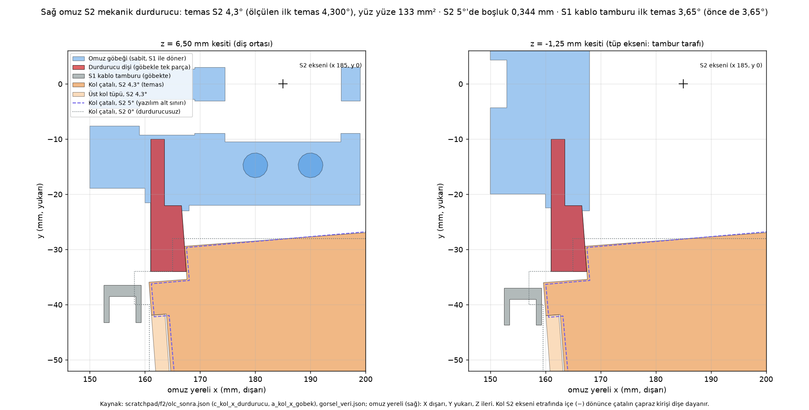
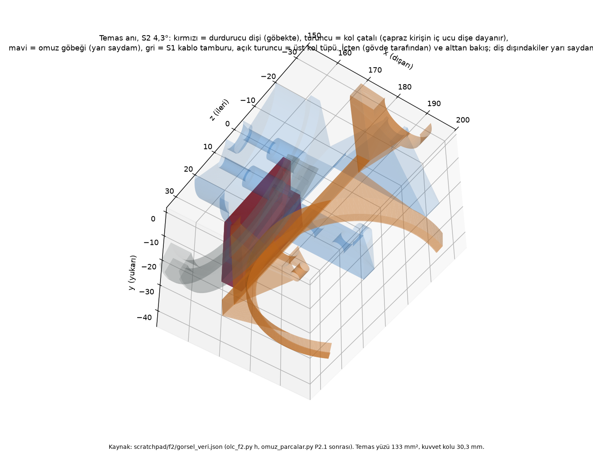

Lale F2: omuz mekanik durdurucu ve omuz taraması (P2.1, P2.2)
Ajan C (ölçüm ve kayıt) · 09.11.2026 · dal lale-duzeltme · kaynaklar: F2-brief.md, F2-gunluk.md, F2-kontrol.md, carpisma_kos.py kontrol ve regresyon.py --yazma çıktıları, karar-kuyrugu.md K38–K41
--yazma, GEÇER; rampa 1,519C'nin commit öncesi koşuları: py -3 tasarim/freecad/carpisma_kos.py kontrol çıkış 0 ("izlenen 17 dosyanin ozetleri kayitla ayni"; commit'ten hemen önce bir kez daha 0); py -3 planlama/d158/regresyon.py --yazma (09.11 07:49:43, taban 07:32:32) çıkış 0. FreeCAD açılmadı. Bu commit'te tasarim/freecad/ altındaki hiçbir kaynak dosyasına dokunulmadı (tarama eskimesin diye; B Koşul 1).
Durdurucu: ne, nerede, neden 4,30°
- Ne: omuz göbeğiyle tek parça PETG-CF bir diş (ek parça, vida yok; BOM değişmez). Kol S2 ekseninde içe (−) döndüğünde kol çatalının çapraz kirişinin iç ucu dişin 4,3° eğik yüzüne yüz yüze dayanır. Kaynak:
arayuz.OMUZ['durdurucu'],omuz_parcalar.py(göbek: 2142,8 mm³ eklendi, çıkan 0). - Nerede: göbeğin iç duvarının altında (omuz yereli x 161…168, y −34…−10, z −8…21), S2 eksenine 30,3 mm. Göbek S1 ile döndüğü için durdurucu S1'in her açısında aynı yerde çalışır.
- Neden 4,30°: brief'teki "kabuk teması −3°" 14 Ekim ölçümüydü, S1 kablo kasetinden önce. Durdurucusuz bugünkü modelde kol önce S1 kablo tamburuna 3,65°'de, S1 kaset kapağına 3,21°'de değiyor. Durdurucu bu yüzden 3,65° (tambur) ile 5° (yazılım alt sınırı,
arayuz.py:176) arasına, yaklaşık ortaya kondu: 4,3°'de tambura 0,400 mm, 5°'te dişe 0,344 mm boşluk. Eski 0…+2° önerisi tamburu ve kaseti korumazdı. - Pay dar: baskı toleransı ±0,2 mm ≈ ±0,38°, 500 g ile 1,5 rad/s çarpmada çatal sapması 0,47°; toplam 0,85°, tambur payını (0,65°) aşabiliyor. İlk montajda sentil kontrolü (S2 5°'te 0,3 mm geçer, 0,4 geçmez) önerildi (K40).

F2-durdurucu-kesit.png.
F2-durdurucu-yakin.png.Kabul ölçütleri
| Ölçüt (brief) | Sonuç | Durum |
|---|---|---|
| P2.1: durdurucu açısında kol–durdurucu teması | İlk temas 4,3002° (A) / 4,3003° (B); 4,29°'de ortak hacim 0,705 mm³, 4,30°'de 0 | geçer |
| P2.1: kol–kabuk 0 (çakışma ölçümüyle) | 4,3°'de temas 0, en küçük 0,831 mm; S2 5°'te 1,358 mm; kol zinciri (dirsek/bilek pozlarıyla) çakışma 0 | geçer |
| P2.1: baskı analizi destek sorunu 0 ya da gerekçeli | Gerekçeli: göbek zaten destekli parça; dişin alt yüzü iç duvarın mevcut destek bölgesiyle birleşti (270 → 673 mm²). Destek 5,2 → 5,7 g; bunun F2 payı ≈ +0,56 g, ≈ −0,15 g Y3 (C1–C3) farkı. "Önce" sütunu 29.10 C1–C3 öncesinden. 4 eğik yüz C3 somun cepleri, F2'den değil (B-4). | geçer |
| P2.1: omuz kütle/tork payları (S1, S2) tablosu | Aşağıdaki tablo; pay değişimi ≤ 0,01 | geçer |
| P2.1: eklem aralığında yeni çakışma 0 | carpisma-sonuc.json eklem aralığında 0 (toplam 364, hepsi aralık dışı, F2 öncesiyle aynı) | geçer |
P2.2: tek_kosu: true, eskimiş bölüm 0 | true (20261109-033441); kontrol çıkış 0 (A, B ve C koşuları) | geçer |
| P2.2: ev pozu çakışması 0, eklem aralığında 0 | ev_pozu_cakisma [], aralıkta 0 | geçer |
| P2.2: omuz ve iskelet regresyonları geçer | İkisi de "FARK VAR", ama referanslar eski (omuz 14.10, iskelet 08.10); F2 öncesi modelle karşılaştırmada F2 kaynaklı fark yok (B iddia 8). Referans yenileme P6.1'de, karar sonrası. | koşullu |
Korunan değerler (regresyon.py) | Çıkış 0, 10/10 aynı (boy 1580, çakışmalar 0, rampa 1,519, tilt 3,64, pan 2,21, mik–hoparlör 574,3, SY8205 × USB 0) | geçer |
Kütle ve tork
| Değer (kaynak) | Önce | Sonra |
|---|---|---|
Omuz göbeği (omuz-analiz.json kutle.Gobek) | 175,1 g | 177,6 g |
Robot (montaj-analiz.json kutle_g) | 25.715,59 g | 25.720,49 g (+4,9) |
S1 tam kol payı, yüksüz / 500 g (dirsek-analiz.json tork.sonuc) | 2,78 / 0,97 | 2,77 / 0,97 |
| S2 tam kol payı, yüksüz / 500 g | 2,72 / 0,97 | 2,72 / 0,97 |
Yüksüz rampa devrilme payı (uygulama-ivme.json) | 1,519 | 1,519 |
500 g'da payın 1'in altında olması F2'den önce de böyleydi (K9). BOM'da Omuz göbeği 118,5 → 123,4 g iki adedin toplamı.
Tarama özeti
- Dokuz bölüm tek koşu kimliğiyle: statik, kol_sag, kol_sol, kolkol, kafa_sabit, kafa_sag, kafa_sol, taban, omuz (en son). Hepsi rc 0. Omuz bölümü 3 sa 25 dk.
birlestir: tek koşu true, eksik yok, toplam çakışma 364, eklem aralığında 0; ev pozu (S1 0, S2 5) 0.- Bellek: her bölümden önce ≥ 2 GB denetimi; omuz koşusunda en düşük boş bellek 4,51 GB; süreç ölümü yok.
carpisma-sonuc.jsonB'nin koşusundan önce ve sonra bayt bayt aynı; C'nin ikikontrolkoşusu da 0.
Darbe emniyeti (kaba hesap, aralıkla)
| Durum | Tepe kuvvet | Diş emniyeti |
|---|---|---|
| Stall (30,4 kg·cm), statik, sürekli | 98 N | 3,7 |
| 1,5 rad/s, yüksüz | ≈ 364 N | ≈ 2,2 (varsayıma göre 1,2–2,6; kök köşesi hesapta yok) |
| 1,5 rad/s, elde 500 g | ≈ 618 N | ≈ 1,3 (0,67–1,55) |
| Kaçak servo, tam hız (8,06 rad/s), yüksüz | ≈ 1526 N | 0,54 |
| Güç kesik, S2 30°'den düşme, yüksüz | ≈ 554 N | 1,48 (0,69–1,78) |
Yöntem: tek serbestlik dereceli enerji, tepe tork = √(2·E·kθ); malzeme PETG-CF XY 59,8 MPa (kol_analiz.py), izin darbede 45,7 MPa. Aralıklar B'nin duyarlılığından: kol esnekliği ihmal edilir ya da diş rijitliği tam alınırsa sonuç bu aralığa yayılıyor. Dişin kök +x iç köşesi 90° keskin; 1,5…2 kat gerilme yığılmasıyla 1,5 rad/s yüksüz emniyet ≈ 1,1…1,5 olur. Servo geri sürme sürtünmesi ve rotor eylemsizliği ölçülmedi.
P6.1'e devredilenler (bu commit'te kaynak değişmedi)
- Diş kökünün +x iç köşesine ≥ 1,5 mm yarıçap ya da pah (
omuz_parcalar.py; kiriş ile köşe arasında ≈ 4 mm yer var). - Yorumlar:
omuz_parcalar.py:167vearayuz.py:179-184"horn/dişli yük almaz" → "tork almaz; darbede kuvvetin ~%88'i S2 mafsalında radyal; rotor eylemsizliği dişlide". arayuz.py:178yana_alt_bosluk_mm={0: 4.7, -2: 0.6, -3: 0.0}eski "−3° kabuk" değeri 158 modeline (kaset 3,21°, tambur 3,65°, diş 4,30°);eklem_sinirlari()metni vekod/ortak/eklem_sinirlari.jsonyeniden üretim (kod/sahibine bilgi).- Omuz ve iskelet regresyon referanslarının yenilenmesi (karar sonrası, gerekçesi yazılarak).
Bunlar dongu-158.md P6.1 satırına yazıldı. Kaynak değişince carpisma_kos.py kontrol bütün bölümleri eskimiş gösterir; P6.1 zaten tam tarama yapacak.
Karar kuyruğu: K38–K41
| # | Karar | Önerilen varsayılan | Sahibi / bloke |
|---|---|---|---|
| K38 | S2 alt bölge hız sınırı ve kapanma sırası (KT-F2-1) | S2 < 20°'de ölçüm gelene kadar ≤ 60°/s (yüklü ≤ 30°/s); güç kesilmeden önce iki kol S2 ≤ 15° | kod/; CAD değişmez |
| K39 | Durdurucu güçlendirme (KT-F2-2) | Önce kök yarıçapı (P6.1) + DS3235 güç kesik düşme ölçümü; emniyet < 1,5 çıkarsa alt sınır 8° + TPU ped ya da metal diş | P6.1, ölçüm |
| K40 | S2 sıfır kalibrasyonu ve sınır metni (KT-F2-3) | Horn kol dişe dayalıyken (4,3°) takılır; S2 5'te 0,3 mm sentil geçer, 0,4 geçmez; yana_alt_bosluk_mm ve eklem_sinirlari.json metni P6.1'de güncellenir | P6.1, P7.1 |
| K41 | S1 yazılım aralığı: kod 0…160 ↔ CAD −45…135 (KT-F2-4 + F5) | Kod −45…135; omuz parçaları S1'i hiçbir açıda durdurmuyor, sınırı kablo U lopu belirliyor (≈ 140,2°) | kod/ |
Metinler B'nin düzeltilmiş önerileriyle (F2-kontrol.md son bölüm). Karar kuyruğu şimdi açık 36 / 41. Hepsi Ahmet'in kararı; döngü varsayılanla ilerlemez.
Kayıt
| Commit | Konu | Dosya |
|---|---|---|
ff1c2e9 | Model + tarama: arayuz.py, omuz_parcalar.py, omuz/dirsek/taban/ana montaj çıktıları (JSON, FCStd, STEP, STL, BOM), uygulama-ivme.json, carpisma-bolum/*.json (9), carpisma-sonuc.json, omuz ve iskelet regresyon çıktıları, regresyon.json, regresyon-son-kosu.json | 34 |
b7c7cb8 | Belgeler: F2-brief.md, F2-gunluk.md (Açık kalanlar 10: B koşulu), F2-kontrol.md, iki görsel, karar-kuyrugu.md (K38–K41), dongu-158.md (orkestratörün F2 ve F8a satırları) | 7 |
Push: 2879c86..b7c7cb8 lale-duzeltme → lale-duzeltme. Açık git add listesi; git status B'nin 34 dosyalık listesiyle birebir, beklenmedik dosya yok. Eklenen satırlarda takma ad 0, başka öğrenci/danışman soyadı 0. Dışarıda: K23 (13 kabuk PNG + montaj/yerlesim-kontrol.json), kvkk/, rapor/, tubitak-2209b/, tasarim/solidworks/, KY/kaynak/, lale_dongu.*, izlenmeyen raporlar/ dosyaları, F5-pano-govde.txt, F5b-pano-govde.txt. Bu rapor ayrı commit'te.